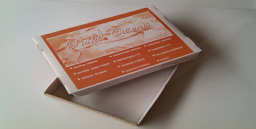
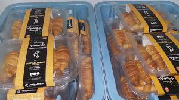

Celidad
Denominación:
Comida apta para celíacos. Este proyecto consiste en la creación de una empresa simulada: “Celicidad” que se encargará de elaborar: ñoquis, pastas frescas y facturas.
Diagnóstico inicial:
Este proyecto va dirigido al 20% de la población salteña que padece de celiaquía, la misma es una enfermedad por la cual las personas no pueden ingerir alimentos con T.A.A.C (Trigo, Avena, Centeno, Cebada)
Fundamentación:
La enfermedad celiaca, también conocida como celiaquía o enteropatía sensible al gluten, se caracteriza por una inflamación de la mucosa del intestino delgado como consecuencia de una intolerancia inmunológica y permanente al gluten ingerido de la cebada, del trigo, el centeno y, en aquellos que tienen predisposición genética a sufrir la enfermedad, también a la avena.
La enfermedad afecta tanto a niños como adultos de todas las edades.
Con este proyecto buscamos dar una solución a la problemática de que los alimentos sin T.A.C.C son de elevado costo por ser de producción no local, además nuestros productos serán elaborados a partir de mezclas de harinas de productos andinos como ser (amaranto, chía, yacón, quinoa, maca, salvado, coca, sésamo, algarroba, semilla de lino, papa andina, poroto, maíz, etc.)
Beneficiarios:
DIRECTOS: será la población celiaca.
INDIRECTOS: son el resto de la población que deseen llevar una vida más saludable por ejemplo los diabéticos, personas con obesidad, los deportistas, etc.
Definición de objetivos:
GENERAL:
- Elaborar productos aptos para celiacos con optimas características nutricionales en base a alimentos andinos, ya que los mismos aportan variedad de minerales como ser el calcio, magnesio, hierro, fósforo, zinc y vitaminas A, C, D, E y del complejo B.
ESPECÍFICOS:
- Brindar diversas alternativas a partir de la elaboración de productos sin TACC a menor costo.
- Ofrecer un producto innovador al mercado: Pastas andinas sin T.A.C.C
- Proporcionar a los celíacos varias alternativas nutricionales con un aumento de opciones de productos en el mercado y con un bajo costo por ser de producción local
Descripción del proyecto:
-
Los integrantes del proyecto serán: Arispe Erika, Gutiérrez Antonella, Gutiérrez Victoria, Poclava Naomi y Tejerina Erika. Todas somos alumnas de 4 año ciclo superior de la especialidad de Técnico en Gestión y Producción Gastronómica, por lo que disponemos con los conocimientos necesarios para llevar a cabo el proyecto.
Durante el transcurso de nuestra carrera hemos recibido el siguiente aprendizaje:
Capacidades y competencia del perfil profesional:
- Conocer e incorporar los fundamentos básicos de la ciencia de la nutrición en la elaboración de los productos.
- Conocer y manipular los alimentos de acuerdo con las técnicas de elaboración y conservación de los diferentes productos.
- Conocer las normas, estándares y procedimientos de seguridad, conservación y sanitación alimentaria.
Espacios curriculares y contenidos que ayudaran al desarrollo de la propuesta/ proyecto:
Formación ética, ciudadana y humanística general:- Lengua.
- Lengua extranjera.
- Formación ética y ciudadana.
- Ética y deontología.
- Relaciones humanas.
Formación científica tecnológica:- Matemáticas.
- TIC (tecnología de la información y la comunicación).
- Higiene y seguridad laboral.
- Organización y gestión de la producción
- Diseño orientado
- Tecnología de los alimentos.
- Formulación y evaluación de proyectos.
- Nutrición.
- Marketing.
- Bromatología.
- Sistema de gestión de la calidad.
- Análisis matemático.
- Probabilidad y estadística.
- Microemprendimientos gastronómicos.
Formación técnica especifica:- Introducción a la problemática gastronómica.
- Gastronomía básica.
- Repostería y pastelería.
- Alimentos andinos.
- Gastronomía regional.
- Repostería regional.
- Panadería y pastelería
- Gastronomía argentina.
- Panadería.
- Prácticas profesionalizantes I
- Gastronomía internacional.
- Gastronomía latinoamericana.
- Prácticas profesionalizantes II
-
Directorio: Tejerina, Erika
Departamento de finanzas: Gutiérrez, Antonella
Departamento de producción: Arispe, Erika
Departamento de Marketing: Poclava, Naomi
Departamento de Recursos Humanos: Gutiérrez, Victoria -
Empaquetado de los productos:
Logo:
Diseño del Packaging:
- Ñoquis, en caja.
 - Pastas Frescas

- Facturas

- Ñoquis, en caja.
Canales de comercialización:
- Por internet, redes sociales (Facebook: CELICIDAD Instagram: Celicidad_Jc) y un negocio en los alrededores de la plaza 9 de julio, con delivery
- Estudio de mercado
- Determinar costo de preparaciones y valor nutritivo.